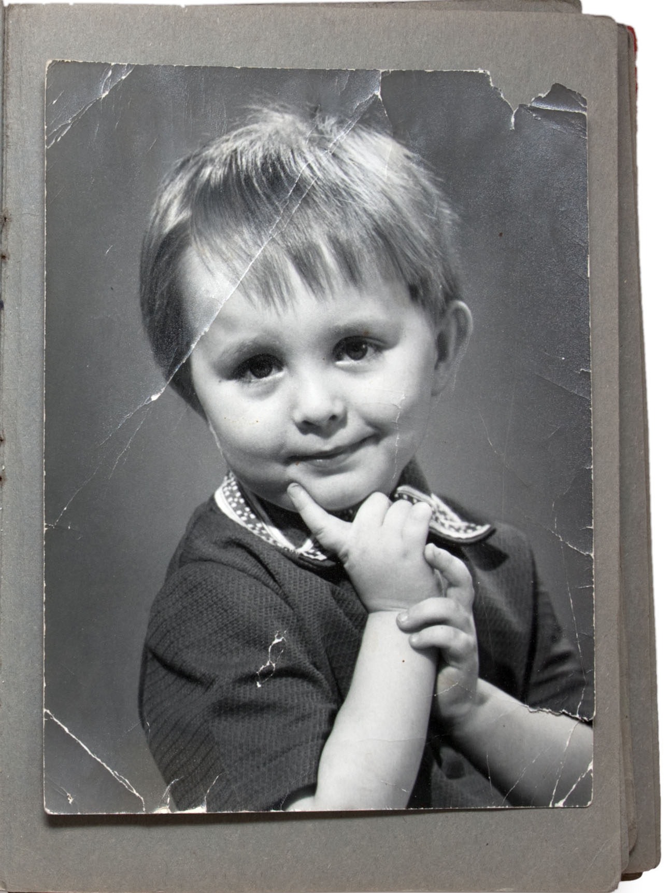
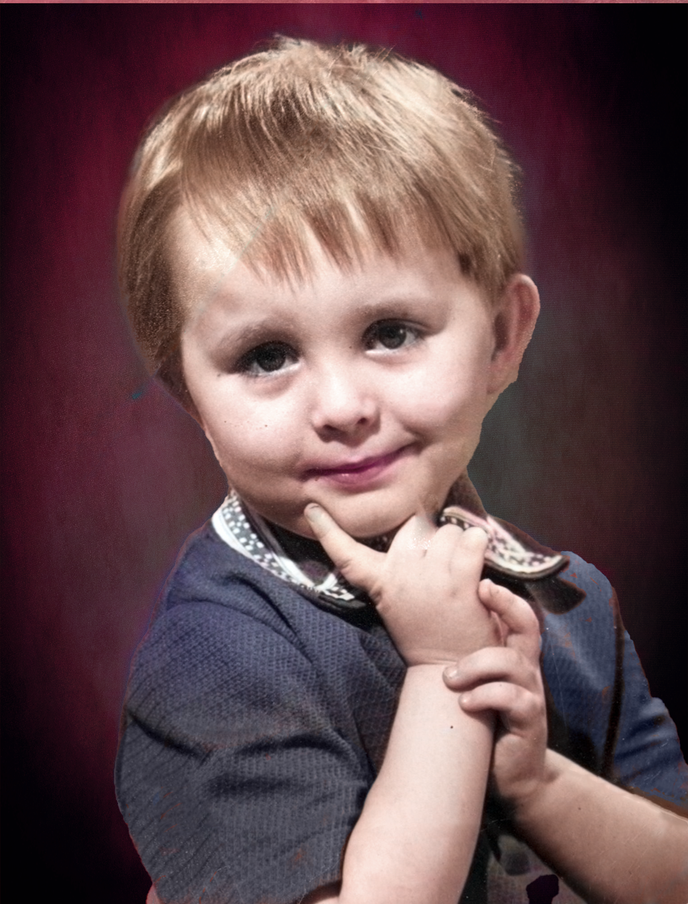

This was my favorite project. The goal of this project was to restore an old, creased black and white photograph. I subscribed to Adobe Stock and discovered two images to use: one for the background and the other as the damaged photograph itself. Initially, I created a working copy of the photograph on a new layer to preserve the original. I then cropped it to correct its skew and eliminate the damaged edges. Using the spot healing brush, I removed most of the creases, and for the textured creases on the boy's shirt, I employed the healing brush tool. Next, I applied the neural filter "colorize," which required me to revisit and adjust some of my previous tweaks. I experimented with adjustment layers, focusing on curves and hue/saturation. To finish, I incorporated the background image to enhance the overall professionalism of the restoration.
 